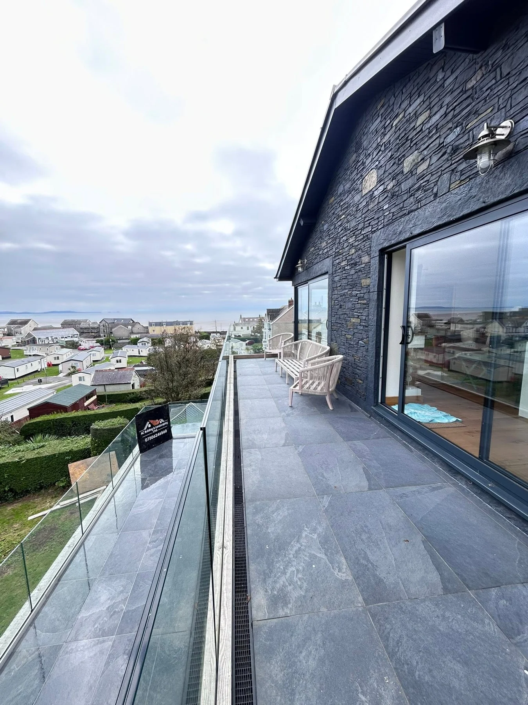

SWANSEA · BUILDING & LANDSCAPING
Your dream space.
Built around you.
From a fresh patio to a complete garden transformation. Building and landscaping that helps you make more of your home and outdoor space.
Patios & pavingGarden transformationsHome improvements
MAKE MORE OF YOUR HOME
Good ideas.
Beautifully brought together.
A garden is more than a patch of ground. It is a place to unwind, spend time together and enjoy your home from a different perspective.
AC Building & Landscaping Ltd works on outdoor transformations and home improvement projects in Swansea and across South Wales. From patios and timber work to renovation enquiries, tell us about the space you want to create.
Start with your ideas →

A REAL GARDEN TRANSFORMATION
From overgrown
to an outdoor retreat.
Existing steps and overgrown borders give way to a garden with clearly defined levels: paving, a lawn area, timber steps and a raised deck.
See the complete before and after photographs by tapping either image.
Explore garden landscaping →OUR SERVICES
Inside your home.
Outside possibilities.
Building and landscaping to bring your plans to life.
Patios & paving
Patios, paths and paved outdoor spaces in Swansea and South Wales.
Explore this service →Garden landscaping
Garden landscaping and outdoor transformations across Swansea and South Wales.
Explore this service →Decking & fencing
Timber decking, garden steps and fencing for outdoor spaces in Swansea and South Wales.
Explore this service →Building & renovations
Building and home renovation enquiries in Swansea and South Wales.
Explore this service →WATCH OUR WORK
A closer look
at the transformation.
Explore two real project videos, from paving improvements to a garden walkthrough. Press play to see the work and the finishing details.
Discuss your project →RECENT PROJECTS
Real spaces.
Lasting impressions.
Patios, terraces, garden details and home improvements. Tap a photograph to see the complete image.
INSIDE THE HOME
A fresh foundation
for everyday life.
This kitchen floor project shows the work from removal and preparation through to the finished wood-effect tiled surface.
Explore building & renovations →SWANSEA & SOUTH WALES
Local projects. Spaces to be proud of.
Based in Swansea, with enquiries welcome from the areas below. Send your postcode and project details to discuss availability.
SwanseaAmmanfordLlanelliBridgendCardiffNewport
PLANNING YOUR PROJECT
A few useful answers.
What work can I enquire about?
Patios and paving, garden landscaping, decking and fencing, and building or home renovation projects.
Can you help with a garden on different levels?
Our project photographs show tiered gardens with paving, decking, steps and lawn areas. Send photographs of your plot to discuss the layout you have in mind.
Which areas do you cover?
Swansea, Ammanford, Llanelli, Bridgend, Cardiff and Newport. Send your postcode to discuss availability for your project.
What should I send for a quote?
Photographs, your postcode, approximate dimensions and a description of what you would like to change. Access information is useful for outdoor and renovation work.
Can I see project videos?
Yes. Two project videos are included above, with playback controls so you can explore the work at your own pace.
LET’S TALK ABOUT YOUR PROJECT
Your ideas.
Our attention to detail.
Send photographs, your postcode and a few details about the work you have in mind. Get in touch to discuss a quote.
AC BUILDING & LANDSCAPING · SWANSEA
A fresh finish.
A home to be proud of.
Tell us about your building or landscaping plans.